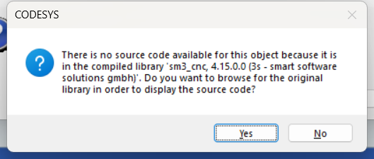

Linux 获取本地网关所有 ip 段地址
执行下面命令即可获取本地网关所有的 ip 段地址：
$ ip address | grep -w inet | awk '{print $2}'
127.0.0.1/8
192.168.122.2/24
172.18.0.1/16
172.17.0.1/16
172.19.0.1/16执行下面命令即可获取本地网关所有的 ip 段地址：
$ ip address | grep -w inet | awk '{print $2}'
127.0.0.1/8
192.168.122.2/24
172.18.0.1/16
172.17.0.1/16
172.19.0.1/16enum 类型的 dut 可以定义一组属性及其值，调用的时候可以方便的通过写其属性名称得到属性的值，也可以获取到属性本身的名称。
下面举一个例子说明：
{attribute 'qualified_only'} // 必须先写类型名称再写属性名称 (例如 eColor.Red)
// {attribute 'strict'} //取消 'strict' 以允许转换 UDINT 数据类型
{attribute 'to_string'} // 运行字符串转换 (例如 TO_STRING(eColor.Red) = 'Red')
TYPE eColor :
(
Red := 16#FFFF0000,
Green := 16#FF00FF00,
Blue := 16#FF0000FF
Yellow := 16#FFFFFF00,
) UDINT; // 声明 UDINT 作为 int 整形类型
END_TYPE
// 定义一些变量
ColorVar1 : eColor;
ColorVar2 : eColor;
ColorName : STRING;
ColorValue : UDINT;
ColorVar1 := eColor.Green; // ColorVar1 = 16#FF00FF00
ColorName := TO_STRING(ColorVar1); // ColorName = 'Green';
ColorValue := TO_UDINT(ColorVar1); // ColorValue = 16#FF00FF00
ColorVar2 := 16#FF00FF00; // ColorVar2.Green
ColorName := TO_STRING(ColorVar2); // ColorName = 'Green';
ColorValue := TO_UDINT(ColorVar2); // ColorValue = 16#FF00FF00
ColorVar1 := ColorVar2 OR eColor.Red; // 按位相与得到 Yellow=16#FFFFFF00
ColorName := TO_STRING(ColorVar1); // ColorName = 'Yellow';
ColorValue := TO_UDINT(ColorVar1); // ColorValue = 16#FFFFFF00以上示例列举了常用的 enum 类型可进行的数据交互方式。
eColor.Green 可以获取enum类型属性的值，并可以赋值给其他对应 enum 实例TO_STRING(ColorVar1) 可以转换获取 enum 实例当前值对应属性名称字符串
下载时出现此报警，原因是 task 任务中对 gou 的排序有问题，放在前面的 pou 中使用了后面 pou 才设定好的数据，需要重新排列 task 任务序列：

mc_power mc_jog 等控制轴的功能块，一运行就报错 SMC_FB_CALLED_FROM_WRONG_TASK，可能是不同的 pou 放在了多个 task 任务中，循环中内部有了冲突，将所有的 pou 放在同一个 task 中就可以解决问题。
目前有很多的云备份服务可以使用，比如 icloud，google photos 等。immich 是一款实现类似功能的本地部署工具，将数据都存储在自己本地服务器上，拥有完善的手机端 app 可以方便的同步备份手机图片。
GitHub 主页：https://github.com/immich-app/immich
官网教程：https://immich.app/docs/overview/introduction/
我服务器目前安装的是 Ubuntu 20.04 系统，很多新的软件包并没有在官方维护的源中提供，所以为了方便需要可以添加第三方的源。
添加需要用到的命令是：add-apt-repository，但是默认系统并没有安装这个环境，需要先手动安装 package software-properties-common：
sudo apt install software-properties-common
然后就可以安装需要的源了，推荐两个：
https://launchpad.net/%7Esavoury1/+archive/ubuntu/backports?field.series_filter=bionic
https://launchpad.net/%7Esavoury1/+archive/ubuntu/utilities?field.series_filter=bionic
安装方法很简单：
sudo add-apt-repository ppa:savoury1/backports
sudo add-apt-repository ppa:savoury1/utilities
sudo apt-get update执行 apt update 后会发现很多可更新的软件了。